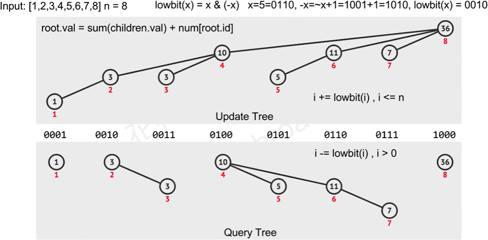

LeetCode307 - (medium) Range Sum Query - Mutable
文章目录
Task
Given an integer array nums, find the sum of the elements between indices i and j (i ≤ j), inclusive.
The update(i, val) function modifies nums by updating the element at index i to val.
Example
|
|
Note:
- The array is only modifiable by the update function.
- You may assume the number of calls to update and sumRange function is distributed evenly.
BIT
- 对于prefix sum问题，使用
BIT(Binary Indexed Tree，又叫Fenwick Tree，又叫树状数组)可实现O(log(n))时间内求解数组的prefix sum，并在数组中一个值发生变化时以O(log(n))的时间更新节点值
motivation
- 假设要求数组x=[2,5,-1,3,6]的第i项到第j项和，可求数组的累计和得到s=[2,7,6,9,15]，用s[j]-s[i-1]即可
- 但当数组中某个值发生变化时，必须重新求累计和，时间是O(n)
- BIT的设计初衷是维护一个数据结构，使得：
- 数组中某个数值发生变化时，可在O(log(n))时间内更新该数据结构
- 需要数组前k项和时，可在该数据结构上以O(log(n))的时间求出结果
- 维护一个树状结构，深度是O(log(n))：
- 数值发生变化（
update）时，从该位置对应节点向根部遍历，时间是O(log(n)) - 求前k项和（
query）时，从该位置对应节点向根部遍历，时间是O(log(n))
- 数值发生变化（
树状结构
- 举个例子：对于数组[1,2,3,4,5,6,7,8]
- update和query对应的数据结构不一样，如下图： 
- 维护
update tree：- 对于数组中的位置
x（红色数字，索引从1开始），每个位置的父节点是位置为x+lowbit(x)的节点。根节点必是数组中最后一个位置 - lowbit(x)是将x转换为二进制后，最低位的1及其后面的部分，快速计算方法：
lowbit(x)=x&(-x)，其中负数使用补码，即-x=~x+1 - 数组某个位置的值增加k时，将该位置对应节点向上直到根节点这条路径上的所有节点值都增加k（初始化时要做n次这样的操作）
- 对于数组中的位置
- 维护
query tree：- 对于数组中的位置
x（红色数字，索引从1开始），每个位置的父节点是位置为x-lowbit(x)的节点。根节点必是2的幂（因为减到最后，二进制形式中只剩下一个1） - 需要求前k项和时，将k对应节点向上直到根节点这条路径上的所有节点相加即是所求值
- 对于数组中的位置
时间复杂度：由于每次update/query时都是从叶子节点向根节点遍历，而数深度是O(log(n))，故update/query的时间复杂度都是O(log(n))空间复杂度：由于BIT本质上是比原数组多一个0索引的数组，故空间复杂度是O(n)
实现
|
|
Solution
- 直接使用上面的FenwickTree类
- 初始化时要对n个数值都update BIT，故时间复杂度是O(nlog(n))
- 每次修改一个值只需update一次，时间复杂度是O(log(n))
|
|